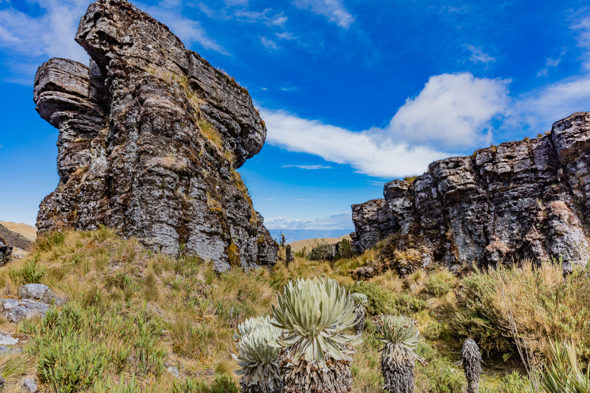

<div class="modal">
  <div class="modal-body">
    <header class="modal-body-header">
      
      
      

    </header>
    <section class="modal-body-main">
      <div class="modal-body-main-imagenes">
        
        <div class="contendor-imagenes">
          
        
        </div>
      </div>
      <div class="modal-body-main-contenido">
        <a [routerLink]="['/']">x</a>

        <h1>PÁRAMO DE OCETÁ  </h1>
        <h3>Explora la Maravilla Natural del Páramo de Ocetá: Tesoro Ecológico en las Alturas de Colombia </h3>
        <p>Bienvenido al Páramo de Ocetá, un santuario natural ubicado en las altas montañas de Colombia, donde la biodiversidad, la belleza escénica y la paz se encuentran en un equilibrio perfecto. Este rincón mágico del país te invita a sumergirte en un paisaje de altas cumbres, páramos dorados y lagunas cristalinas, ofreciendo una experiencia única para los amantes de la naturaleza y los aventureros por igual.  </p>


          <h2>Biodiversidad Asombrosa  </h2>
          <p>El Páramo de Ocetá es una joya ecológica, hogar de una biodiversidad asombrosa. Descubre una variedad de especies de plantas y animales que han evolucionado para adaptarse a las condiciones extremas de este ecosistema de alta montaña. Desde frailejones, emblemáticas plantas del páramo, hasta aves coloridas y mamíferos resistentes, cada encuentro en el páramo es una oportunidad para aprender sobre la riqueza de la vida silvestre en Colombia. </p>
        
          <h2>Senderismo entre Cumbres y Lagunas </h2>
          <p>El páramo es un paraíso para los amantes del senderismo. Explora senderos que serpentean a través de la vastedad del paisaje, llevándote a cumbres escarpadas con vistas panorámicas y a lagunas serenas que reflejan el cielo y las montañas circundantes. La sensación de estar en la cima del mundo, rodeado de la majestuosidad de las altas montañas, es verdaderamente inspiradora.  </p>

          <h2>Aventuras Fotográficas  </h2>
          <p>El Páramo de Ocetá es un escenario perfecto para los fotógrafos aficionados y profesionales. Cada rincón ofrece oportunidades para capturar la belleza natural en su máxima expresión: desde amaneceres y atardeceres de colores brillantes hasta la neblina matutina que se desliza entre las montañas, creando un ambiente místico y etéreo.  </p>

          <h2>Conservación y Ecoturismo Responsable  </h2>
          <p>El páramo es un ecosistema frágil y delicado que requiere protección y conservación. Al visitar el Páramo de Ocetá, los viajeros tienen la oportunidad de aprender sobre la importancia de la conservación del páramo y participar en actividades de ecoturismo responsable. Los guías locales expertos te mostrarán la belleza del páramo mientras fomentan prácticas sostenibles para preservar este tesoro natural para las generaciones futuras.  </p>

          <h2>Cómo Llegar </h2>
          <p>Para llegar al Páramo de Ocetá, los viajeros pueden tomar una ruta escénica desde las ciudades cercanas, como Tunja o Sogamoso. El viaje te llevará a través de carreteras sinuosas y pintorescos paisajes, preparándote para la majestuosidad que te espera en las alturas. </p>
      </div>
    </section>
    <footer>
      
    </footer>
  </div>
</div>
